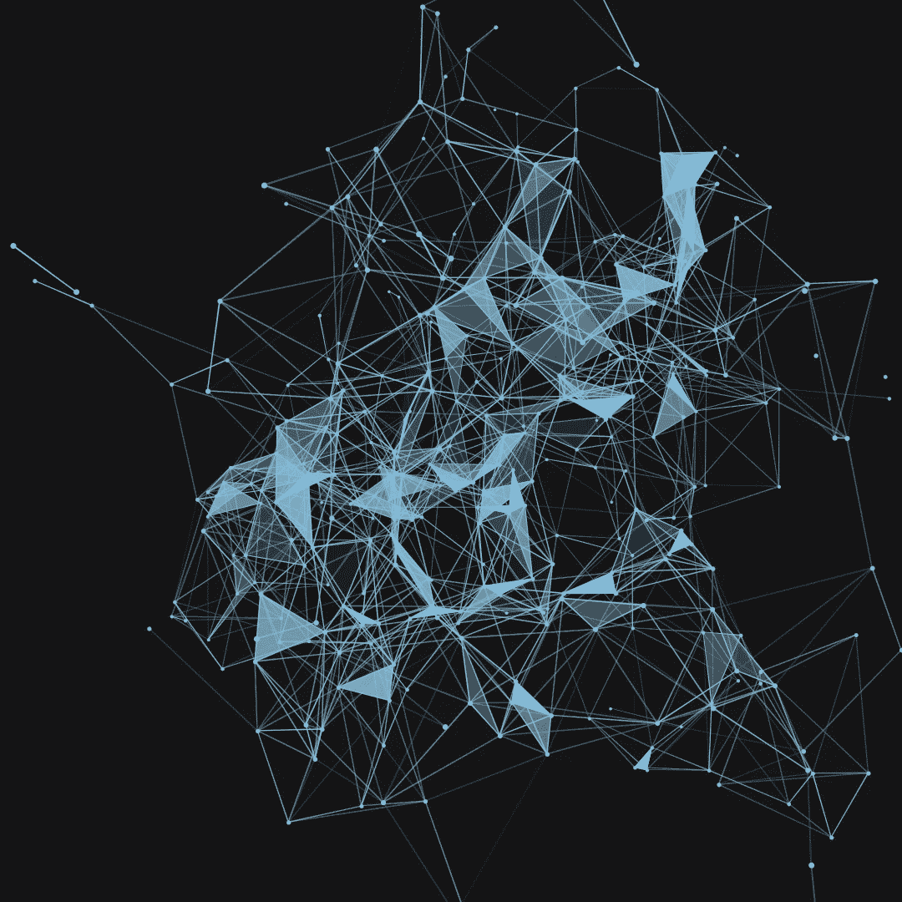

machine learning for python
An online lecture presented by Programming with Mosh that is a beginner tutorial on using machine learning with Python. The tutorial utilizes the Scikit-learn, Pandas, Numpy, and Matplotlib packages. The lecture can be found at here.
Contents
- Introduction to Machine Learning
- Tooling
- Problems
What is machine learning?
- Machine learning is a subset of A.I
- "The study of computer algorithms that improve automatically through experience and by the use of data."
- Ex. Image recognition software works by feeding algorithms man pictures of each until it can differentiate the two
- Ex. Self driving cars, robotics, language processing, etc.
Steps
- Import the data (typically in a .csv file)
- Clean the data (to combat the machine learning bad, irrelevant, or duplicated data)
- Split the data into training/test steps (perhaps 80% for training, 20% for tests)
- Create a model (select an algorithm(s) to analyze the data)
- Train the model (looks for patterns in the data)
- Make predictions by way of the model
- Evaluate and improve the model
Libraries and Tools
- Numpy, mainly used for multy dimensional array
- Pandas, a data science package mainly used for its data framing (similar to excel)
- Matplotlib, mainly used for its 2D plotting
- Scikit-Learn, the most popular machine learning library (contains decision trees, neural networks, etc.)
Environments
- Any environment will of course work but for machine learning Jupyter works best
- This is due to the frequent inspection of the data
Importing Data Sets
- Kaggle is the most popular data set website
- Sample Code
- import pandas as pd #pd is the standard abbreviation
df = pd.read_csv('filename.csv') #df denotes dataframe
df #displays the actual data in the way it is presented
df.shape #displays the number of rows by the number of columns
df.describe() #returns the describe command
df.values #returns the value command - Read
- The read command allows the code to load it and read the csv file in its entirety
- Shape
- Displays the number of rows by the number of columns
- This is the 'shape' of the data frame
- Describe
- Returns basic numerical information about each column in the data set
- It contains count, mean, standard deviation, min, 25%, etc.
- Values
- Presents the data in an array in a row by row fashion
Jupyter Shortcuts
- 'Esc' key enables the active cell to turn into the command mode
- Pressing 'H' in the command mode displays all the shortcuts in Jupyter
- 'Crtl + Enter' runs the current cell without creating a new one below it
Example
- Creating a model to predict songs for a user
- Take in some basic information like age, gender, preferred genres, etc.
- Implement the steps for machine learning
Importing
- This step imports the proper packages and data for the project
- import pandas as pd
music_data = pd.read_csv('music.csv')
music_data #check to make sure python is reading the file
Preparing the Data
- This contains and is not limited to deleting replicants, removing outliers, etc.
- For this example the data does not need any cleaning
- Denote the input sets and output sets
- Input sets are data that will be used by the model to make predictions about the output sets
- In this case, the input sets (age and gender) will be used to determine the output set (genre)
- import pandas as pd
music_data = pd.read_csv('music.csv')
X = music_data.drop(columns=['genre']) #disregards the genre column and assigns it to X
y = music_data['genre'] #assigns only the genre data to the y value
Learning and Predicting
- This step uses the Scikit-Learn which contains a large amount of algorithms built in
- This reduces our need to build one from scratch
- import pandas as pd
from sklearn.tree import DecisionTreeClassifier
music_data = pd.read_csv('music.csv')
X = music_data.drop(columns=['genre'])
y = music_data['genre']
model = DecisionTreeClassifier() #Defines DecisionTreeClassifier as model
model.fit(X, y) #fits out input and output sets to the model
predictions = model.predict([[21, 1], [22, 0]]) #observing the prediction of our model
predictions
Calculating the Accuracy
- This is done by the training and test sets
- The general rule is to allocate 70-80% of the data to training sets and 20-30% to test sets
- import pandas as pd
from sklearn.tree import DecisionTreeClassifier
from sklearn.model_selection import train_test_split
from sklearn.metrics import accuracy_score
music_data = pd.read_csv('music.csv')
X = music_data.drop(columns=['genre'])
y = music_data['genre']
X_train, X_test, y_train, y_test = train_test_split(X, y, test_size=0.2) #outputs a tuple and they are all assigned a value
model = DecisionTreeClassifier()
model.fit(X_train, y_train) #Rewrite with the proper variables
predictions = model.predict([X_test]) #Rewrite with proper variables
score = accuracy_score(y_test, predictions) #compares the test set with the predicted train set and gives a score from 0-1
score #the score will differ since the train_test_split randomly selects data from data set
Persisting Models
- Basic implementation of building, creating, and training models
- Used to reduce code, clutter, and model flexibility
- Using joblib from sklearn this creates a model file that can be loaded
- [1] import pandas as pd
from sklearn.tree import DecisionTreeClassifier
from sklearn.externals import joblib
music_data = pd.read_csv('music.csv')
X = music_data.drop(columns=['genre'])
y = music_data['genre']
model = DecisionTreeClassifier()
model.fit(X, y)
joblib.dump(model, 'music-recommender.joblib) #creates a file that has the model trained
predictions = model.predict([[21, 1], [22, 0]]) - [2] model = joblib.load ('music-recommender.joblib) #loads the previous model file and can predict using a few short lines
predictions = model.predcit([[21,1]])
predictions
Visualizing the Models
- This example uses a decision tree just because they are the easiest to understand
- import pandas as pd
from sklearn.tree import DecisionTreeClassifier
from sklearn import tree
music_data = pd.read_csv('music.csv')
X = music_data.drop(columns=['genre'])
y = music_data['genre']
model = DecisionTreeClassifier() #Defines DecisionTreeClassifier as model
model.fit(X, y)
tree.export_graphviz(model, out_file='music-recommender.dot', feature_names=['age', 'gender'], class_names=sorted(y.unique()), label='all', round=True, filled=True)
